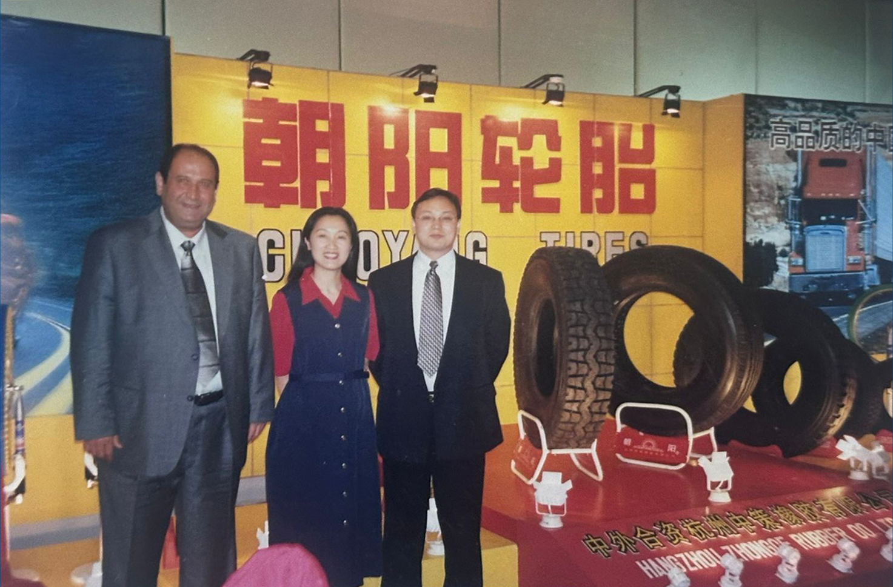

Güveni büyüten köklü güç.
Konlas Otomotiv'in yarım asra yaklaşan ticaret disipliniyle kurulan Lasmax, güçlü marka portföyünü Türkiye genelindeki bayi ağıyla buluşturur.
1979
Konlas ile ilk adım
20 m²'lik bir başlangıçtan, disiplinli ticaret anlayışıyla büyüyen güçlü bir yapıya ulaşıldı.
1997
Global marka açılımı
Uluslararası üreticilerle kurulan ilişkiler, Türkiye pazarına güçlü lastik markaları kazandırdı.
2013
Lasmax bayi sistemi
Konlas deneyimi Lasmax çatısı altında organize bayi gücüne, standart hizmet modeline dönüştü.
Bugün
Türkiye geneli erişim
Stok, lojistik ve bayi koordinasyonuyla doğru ürünün doğru noktaya ulaşması sağlanır.

1979
GEÇMİŞTEN GÜNÜMÜZE
Tarihçemiz
1979
KONLAS, 1979 yılında 20 m²'lik bir alanda faaliyetlerine başlamış; sürdürülebilir büyüme anlayışıyla güçlü temeller atmıştır.
KONLAS, 1979 yılında 20 m²'lik bir alanda faaliyetlerine başlamış; sürdürülebilir büyüme anlayışıyla bugün 60 çalışanı ile 1.500 m²'lik merkez binasında ve 15.000 m²'si kapalı, 7.000 m²'si açık olmak üzere geniş depolama alanlarında hizmet vermektedir.
1997 yılından itibaren uluslararası pazarlara açılan KONLAS, dünyanın farklı ülkelerinde üretilen kaliteli lastik markalarını Türkiye pazarına sunarak sektöründe güçlü ve güvenilir bir ithalatçı konumuna ulaşmıştır.
2013 yılında KONLAS A.Ş.'nin bayilik sistemi olarak kurulan Lasmax, bugün Türkiye'nin dört bir yanındaki bayi ve hizmet ağıyla büyümesini sürdürmekte, premium segmentte sürdürülebilir bir değer zinciri kurmaktadır.

1979
Kuruluş
1989

Distribütörlüğü
1997

Distribütörlüğü
1998

Türkiye Distribütörü
2007

Türkiye Distribütörü
2006

Türkiye Distribütörü
2007

Türkiye Distribütörü
2015

Türkiye Distribütörü
1979
Kuruluş
1989
Distribütörlüğü
1997
Distribütörlüğü
22

Türkiye Distribütörü
2007
Türkiye Distribütörü
2006
Türkiye Distribütörü
2015
Türkiye Distribütörü